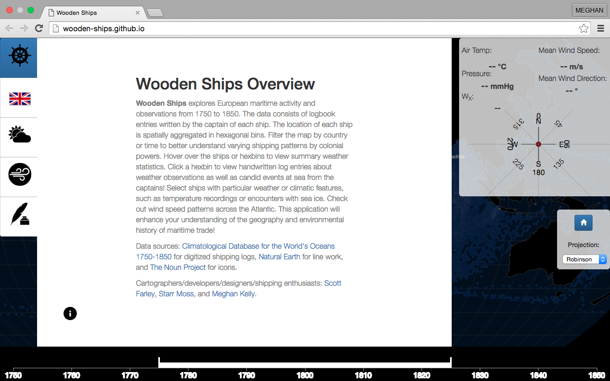

Wooden Ships is my latest collaboration with Scott Farley and Starr Moss. Built with D3 javascript library (among others), Wooden Ships explores European maritime activity and observations from 1750 to 1850. The data consists of logbook entries written by the captain of each ship. The location of each ship is spatially aggregated in hexagonal bins. Interactive version available here.
NACIS Student Dynamic Map Award Winner!
